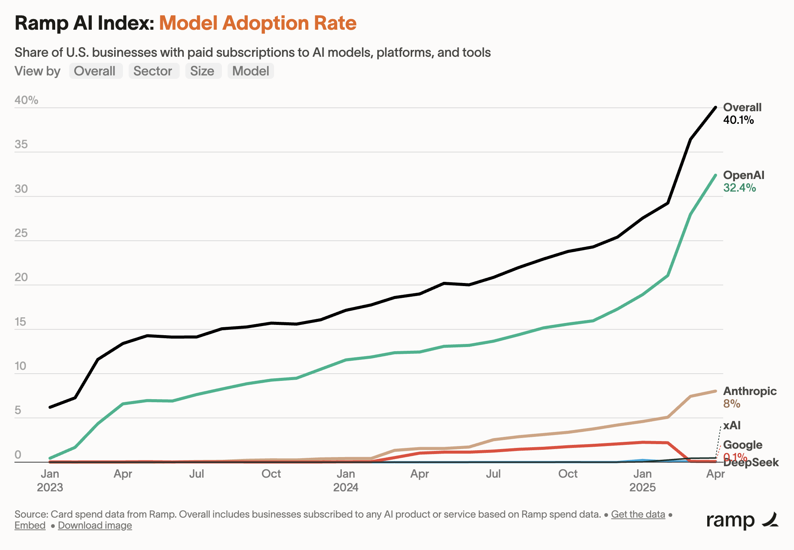
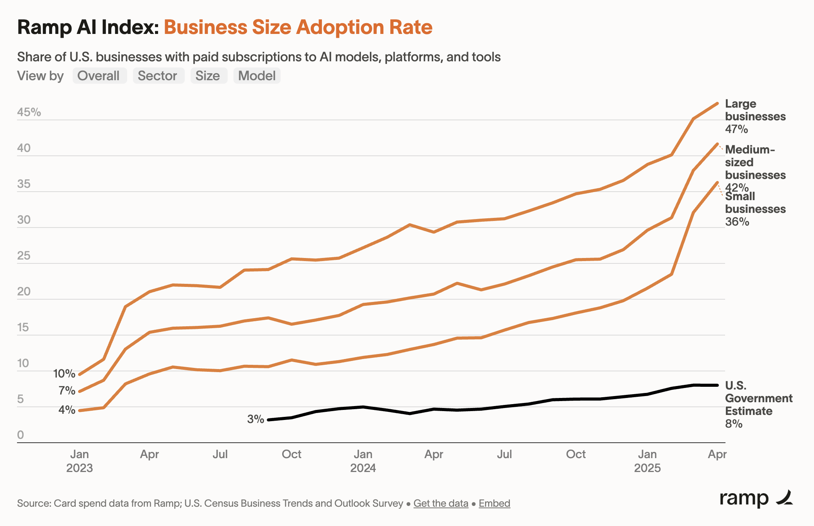

An interpretation of OpenAI buying Windsurf
OpenAI's $3B acquisition of Windsurf (Bloomberg) probably reflects two strategic imperatives: (1) extending their product capabilities to capture the "workspace of the future" opportunity and (2) expanding their enterprise beachhead, since Windsurf is an enterprise company.
On (1), one big thing that Windsurf does that ChatGPT doesn't is connect to a file system and manipulate it directly, with version control. Buying Windsurf would bring them this capability. (Read more about this here.)
- ChatGPT recently launched a direct integration between Github and its Deep Research tool. While the best use case for this seems to be creating robust documentation on-demand, it hints at a deeper integration whereby ChatGPT could take action on a repository, e.g. opening a pull request. You can view the Windsurf acquisition as accelerating the roadmap of which this feature is a part.
On (2), recent data from Ramp suggests OpenAI is making huge strides selling their products to businesses (B2B):

I thought this chart would skew towards startup data (self-selection of Ramp's customer base), but Ramp's data actually suggests larger companies are adopting AI faster than startups (as a % of companies):

Enterprise revenue would help OpenAI differentiate its business away from notoriously fickle consumer subscribers. Today, most of OpenAI's revenue comes from a consumer subscription product, ChatGPT. How durable is this revenue, given that (a) models are commoditizing, (b) free substitutes are cropping up from competitors large (Google, Meta) and small (Perplexity, Chorus), and (c) consumers churn at a relatively high rate?
Faced with this question, a rational strategy would be to pursue enterprise revenue, which by contrast is quite sticky. Doing so would give OpenAI an effective hedge in case threats to their consumer business materialize.
- Side note: Navigating threats to their consumer subscription business may relate to their recent hiring of Fidji Simo. Simo most recently was CEO of Instacart (where she introduced their ad offering), and VP of Product at Facebook (where she dramatically grew their ad revenue). OpenAI's free tier is currently a loss leader, driving revenue to their Plus and Pro businesses. Not only is there a significant revenue opportunity on the free tier (monetization follows attention), but an ad business is also an effective hedge against challenges to their consumer subscription product.
What does all this mean for Cursor?
Cursor reportedly turned down an acquisition offer from OpenAI last year. I thought Rory on 20VC had a good game-theoretical analysis (around 3:57):
When you're the number two and you get the heavy squeeze from the adjacent acquirer, it often makes sense to fold, because otherwise they might buy the number one and then you're done. When you are the number one, you might be able to stay yourself, I'm still the independent winner, I can create value, there are other acquirers. [Cursor] is probably bravely going forward saying, "This is the bet we're taking." But yeah, it takes real courage to turn down whatever was offered and say we're going to compete against these guys instead.
I'm a happy DAU of Cursor. If OpenAI offered the same product somehow built into ChatGPT and bundled with my Plus subscription, would I switch away from Cursor? Maybe – if:
- ChatGPT offers a similar familiar IDE experience – Windsurf brings that.
- There are compelling features such as integrations to Vercel and Stripe – they've already got Github.
- Cursor doesn't introduce new compelling features to head that off in the meantime – this is the question.
This is the $9B question, in fact, as Cursor just last week raised $900M at that valuation (FT).